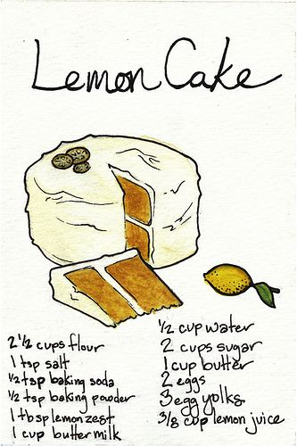

Recipe for Zesty Lemon Cake Delight

Ingredients:
- 2 cups all-purpose flour (for a fluffy cake texture)
- 1 1/2 cups granulated sugar (for a touch of sweetness)
- 1 teaspoon baking powder (to make it rise like a sunbeam)
- 1/2 teaspoon baking soda (for a little extra lift)
- 1/2 teaspoon salt (just a pinch to enhance the flavors)
- 1/2 cup unsalted butter, softened (for a creamy dreamy texture)
- 3 large eggs (because we need some egg-cellent company)
- 1 cup buttermilk (for moist perfection)
- Zest of 2 lemons (to infuse the cake with zingy goodness)
- 1/4 cup fresh lemon juice (to add a burst of citrus flavor)
For the Lemon Glaze:
- 1 cup powdered sugar (for a sweet finishing touch)
- 2 tablespoons fresh lemon juice (to make it tangy and irresistible)
- Additional lemon zest for garnish (because we love that extra zing)
Instructions:
- Preheat your oven to 350°F (175°C). It's time to get this lemony party started!
- In a mixing bowl, combine the flour, sugar, baking powder, baking soda, and salt. Give them a little whisk
and let them mingle.
- Add the softened butter to the dry mixture and mix until it becomes crumbly. You can use a mixer or go old
school with a fork.
- Crack in the eggs one at a time, mixing well after each addition. Imagine you're adding drops of sunshine to
the batter!
- Pour in the buttermilk, lemon zest, and fresh lemon juice. Mix everything together until you have a smooth
and velvety batter. Embrace the lemony fragrance!
- Grease and flour a 9-inch round cake pan or line it with parchment paper. We want the cake to come out with
ease!
- Pour the batter into the prepared cake pan, spreading it evenly. Give it a little tap on the counter to
release any air bubbles and level it out.
- Pop the pan into the preheated oven and let the cake bake for about 30-35 minutes. While it bakes, the
citrusy aroma will make your kitchen feel like a lemon grove!
- To check if it's done, insert a toothpick into the center of the cake. If it comes out clean or with a few
moist crumbs, your lemony creation is ready.
- Remove the cake from the oven and let it cool in the pan for about 10 minutes. It needs a moment to gather
itself before the grand finale.
- While the cake cools, let's whip up a tangy lemon glaze. In a bowl, mix together the powdered sugar and
fresh lemon juice until smooth and drizzle-worthy.
- Once the cake has cooled slightly, transfer it to a serving plate. Drizzle the lemon glaze over the top,
letting it cascade down the sides like a lemon waterfall.
- Sprinkle some additional lemon zest on top for an extra pop of lemony goodness and a beautiful garnish.
- Now, it's time for the grand finale! Slice a generous piece of your zesty lemon cake, savor every tangy
bite, and let the bright flavors dance on your taste buds.
- Share it with loved ones or keep it all to yourself. Either way, you've created a lemony masterpiece to be
proud of!
Enjoy the zesty delight of your homemade lemon cake! It's sunshine in every slice.